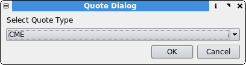

Download Quotes
Description
This is the quote update center of Qtstalker.
After selecting the quotes button from the toolbar or from the Tools-Submenu, these dialogue box come up...

...where you have to choose which quote plugin is to use.
Currently Qtstalker provides the following plugins:
- CME : Historical and EOD futures quotes from the Chicago Mercantile Exchange. (Currently broken.)
- CSV : Import local comma-separated values text data files
- NYBOT : EOD futures quotes from the New York Board of Trade. (Currently broken.)
- Yahoo : Historical and delayed quotes from Yahoo Finance.
You use the various quote plugins to create and update the data you want and import them into Qtstalker. Each plugin will use different input data parameters. You can modify the settings for each plugin by pressing the "Settings" button located just to the right of the plugins combobox. Once all the input parameters are satisfied, pressing the "Update" button will start the update. If you want to interrupt an update, press the "Cancel Update" button.
The download status area displays the progress of the plugin once update
is started. Any information and errors will display here.
Alternative data loading methods
See notes about behind-the-scenes external access to the underlying Berkeley DB databases.
There is also a MySQL Plugin maintained as a separate project.